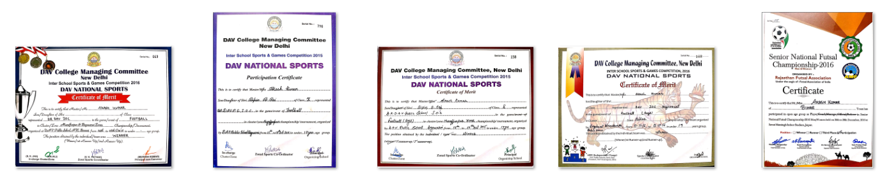
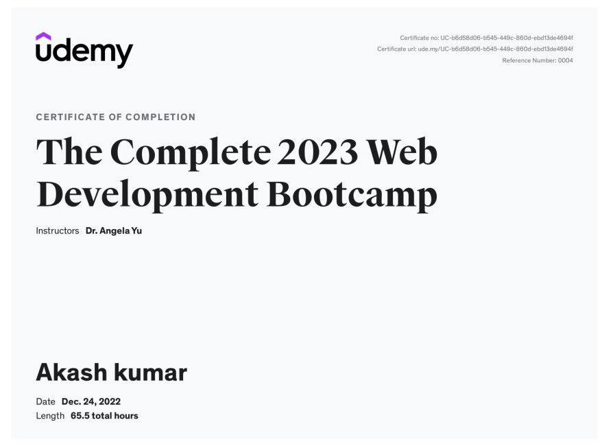

Akash Kumar
Summary
I am at a level of intermediate in C/C++/Java and i am also having keen interested in web
development and learning HTML/CSS/JS. Currently i am learning these skills to add to my
asset with the building block of computer science. I have been into sports for very long and
believes not to stop until my heart and mind don't. from sports i meant football which is my
passion and it helped me to grow a lot. I learn leadership skills/critical-thinking skills and
learned to act in and according to my team and most importantly football taught me to
work calmly under deep pressure.
Education
Bachlors
- Geeta Engineering College(Kurukshetra University)
- 2020-2024(batch)
Senior Secondary
- U.T College,Begusarai
- Percentage Obtained : 54%
- 2018(Passing year)
Secondary
- BR DAV Public School,Begusarai
- Percentage : 77.9%
- 2016(Passing year)
skills
Underdevelopment
- webdevelopment
- Data structures and algorithm(C++)
Personal skills
- sketching/Painting
- Rubik's Cube solver
- knowledge of microsoft PPT
Hobbies
- Playing Chess
- Playing Football
- basketball
- Badminton
- Movies and Songs
Achievements
certificates of football.

certificate of webdevelopmet

Other
Contact Me